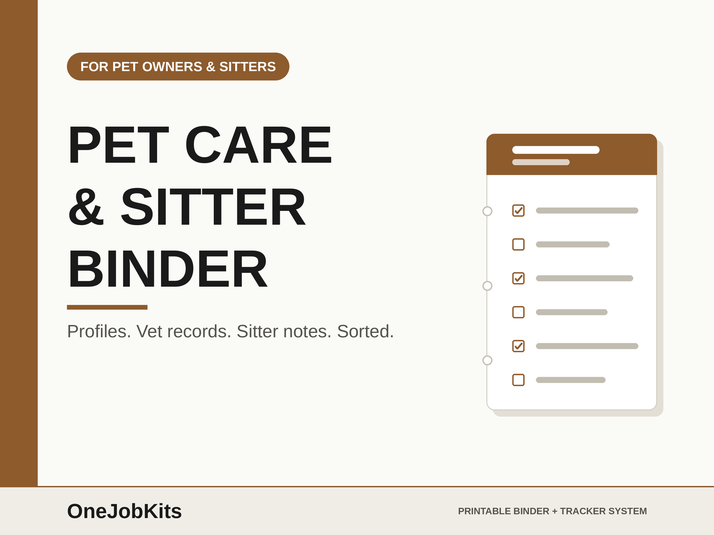

OneJobKits · Kit #22
Pet Care & Sitter Binder — pet care binder printable

If you searched for a pet care binder printable, your pet's life is probably paperwork now: the vet invoice in a drawer, the feeding routine in a text thread, the care schedule in your head — and the one time it all has to be in one place is the day you hand your pet to a sitter and walk out the door.
The free starter on this page covers that handover for one stay. The full kit under it puts the whole record and the whole handover in one system, in two parts that mirror each other: a printable, fillable binder for the house, and a spreadsheet tracker for the screen — profile, vet history, care routine, feeding, weight and milestones, plus sitter instruction sheets that cover a whole stay.
Free download — start with the Sitter Instruction Starter
The Sitter Instruction Starter is a 3-page fillable PDF (70 form fields): pet basics plus feeding instructions, the daily routine, house rules and emergency contact steps, and a 7-day sitter check-off grid. It carries the full not-veterinary-advice disclaimer on its back page. Records and prompts only.
Download the free sitter instruction starter (PDF)Get it on Gumroad instead
What the starter does not keep: the record behind the stay. The full system below is the 14-page binder plus tracker that holds the whole history — vet visits, care schedule, weight, milestones — not just one trip's instructions, so the next handover starts from the record instead of from memory.
What's inside the full kit
- 14-page printable + fillable PDF binder (499 fields): two pet profile pages plus an "About My Pet" sitter page — facts, personality, likes, dislikes and fears in plain words
- Four sitter instruction sheets — feeding; daily routine & walks; house rules & home notes; and emergency steps & contacts (contact steps only — who to call, in what order)
- Two vet visit record pages + a medication & care record page — the item name and amount copied word for word from the vet label, with a given-log so every dose given is ticked and initialled
- Feeding & weight log page, two travel checklists (before you go; packing & sitter handover), and an emergency contacts & important numbers page
- Pet care tracker (Excel + Google Sheets) — a pet profile tab, a vet visits log (visit count and total spend calculate), a medication & care schedule (records only — the Active count calculates), a feeding plan record with a two-week feeding log, a weight & milestones log (change since the same pet's last weigh-in calculates), and an emergency contacts & vet info tab
- A filled EXAMPLE workbook — two fictional pets, Biscuit (Golden Retriever, b. 2022) and Miso (Domestic Shorthair cat, b. 2023), so you see the whole system filled before you type a real name
- Setup guide (6 pages) — the one-hour setup in order, the 15-minute sitter handover, travel both ways, and the weekly 5-minute / monthly 10-minute routine
- Bundle ($39) adds: the Multi-Pet workbook pair (Excel + Google Sheets) — the Pet Profile laid out as four profile blocks (up to 4 pets) plus a HOUSEHOLD DASHBOARD that calculates each pet's vet visits logged, vet spend, active care items and weigh-ins from the logs by exact pet name, with household totals
A filled example — so you can see the finished thing
The tracker ships filled in for two fictional pets — Biscuit, a Golden Retriever (b. 2022), and Miso, a Domestic Shorthair cat (b. 2023) — with their clinic, visits and costs invented and labelled as an example:
| Read from the example logs | Biscuit & Miso's example |
|---|---|
| Vet visits logged | 5 visits, totalling $589.25 — the total calculates from the entries |
| Care schedule | 4 rows recorded exactly as their vet labels read, 3 of them Active |
| Feeding plans | Both pets' plans recorded, with a sitter-week log filled in day by day |
| Weight & milestones | 8 entries, each weight showing the change since that pet's last weigh-in |
Fill yours in the same way and the questions a sitter, a boarder or a new vet asks are already answered — in the binder, not in a text thread from March.
Who it is for
Pet owners who hand their pet to a sitter, a boarder, or family cover and want the handover written down instead of texted from the airport — and multi-pet households whose records currently live in three drawers and a camera roll.
Who it is not for
Anyone looking for veterinary advice, a diagnosis, treatment guidance, or dosing guidance. There is none in here — on purpose. This kit records what your vet already decided; it never decides anything.
Questions buyers ask
- What should I leave for my pet sitter?
- Four things, written down: who your pet is (facts, personality, likes, dislikes and fears), feeding exactly as the vet label says, the daily routine and house rules, and the emergency contact order — who to call, in what order, including your vet. The free starter on this page is built as exactly those sheets for one stay; the full kit's binder carries the same four instruction sheets plus the whole record behind them.
- Does the kit tell me what dose to give my pet?
- Never. There is no dosage guidance anywhere in it, by design. The medication and care pages are records only: you copy your veterinarian's label word for word, and if the label and the sheet ever disagree, the label is right and the sheet gets corrected.
- I have three pets. Which tier do I need?
- The Bundle. Its Multi-Pet workbook lays the profile out as four blocks — up to 4 pets — and its household dashboard totals each pet's vet visits, vet spend, active care items and weigh-ins separately, by exact pet name, with household totals on top.
- What does the tracker calculate for me?
- The vet visits log counts visits and totals spend. The care schedule counts how many recorded items are Active. The weight log shows the change since the same pet's last weigh-in. In the shipped example — two fictional pets — that is 5 visits totalling $589.25 and 3 active care items, all read off the entries underneath.
- What does the free starter cover, and what does the full kit add?
- The starter covers one stay: pet basics and feeding, daily routine, house rules and emergency contacts, and a 7-day check-off grid. The full kit keeps the whole record — the 14-page binder, the tracker with vet, care, feeding and weight history, the filled example and the setup guide — so every future handover starts from the record.
- Print it or fill it in on screen?
- Both. The binder and starter are fillable PDFs you can type into or print and write on. The tracker runs in Microsoft Excel and Google Sheets — both formats included, no macros.
Prices
Standard: $29 · Bundle: $39 — one-time payment, digital download. No subscription; the files are yours.
Can't find the kit you need?
We build it. Ask us — first asker gets it at half the shelf price. Tell us the job at onejobkits.com and we will build the kit for it.
Related kits
Please know: this is an organiser and records system only — not veterinary or medical advice, and no dosage guidance anywhere. Care-schedule fields are records only: copy your veterinarian's label word for word — if the label and the sheet ever disagree, the label is right and the sheet gets corrected. Always follow your veterinarian's own instructions; if your pet seems unwell, injured, or in distress, contact your veterinarian or an emergency animal clinic straight away. The example pets, clinic, vets, visits and costs are fictional and labelled as such.